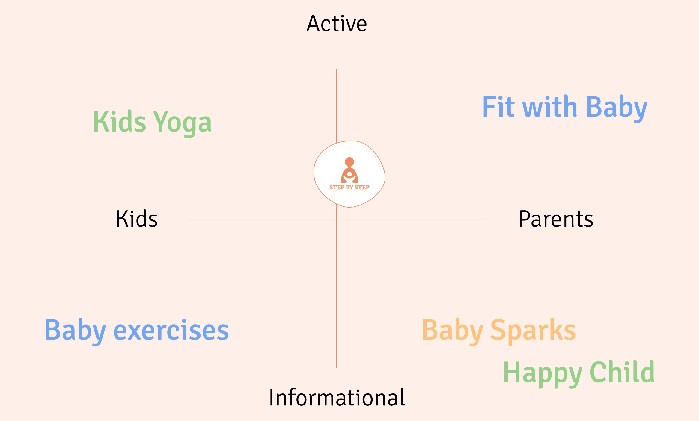

Step by Step - app aplications

Goal:
To design a mobile app that supports parents with children up to 2 years
old, helping them engage in child stimulation while maintaining their
identity and self-care.
Tools
Figma | Figjam | Lean Survey Canvas | Notion
Methodology
Design Thinking
Resume
Research
Quantitative Research:
We conducted surveys with 102 parents, revealing challenges such as lack of personal time, feelings of exhaustion, and changes in lifestyle after having children. 92% of parents reported a decrease in physical activity after childbirth, and 52.9% stopped exercising all together.
Qualitative Research:
In-depth interviews with 5 parents provided deeper insights into their daily struggles and desires to balance parenting with self-care. This led to the creation of a persona, *Mummy Monica*, and a User Journey Map to identify pain points.
Market Research:
A brand comparison and market position map revealed a gap in existing apps — no app combined baby stimulation with activities for parents’ self-care. This presented a unique opportunity for *Step by Step.

Solution & Concept
Problem Statement
Parents need a way to engage with their infants while maintaining their identity and wellness, even with limited time.APP Concept
A wellness app offering personalized activity suggestions based on parent and child profiles, helping parents stimulate their babies while enjoying their hobbies. The app includes motivational notifications, developmental insights, and simple, fun activities.Design Process
Affinity Diagram
We prioritized areas to focus on, particularly stimulating kids and addressing time constraints for parents.
Prototyping
After creating a user flow, we built a low-fidelity prototype. Usability testing with 5 parents confirmed the concept, leading to improvements in the design, including:
- Adding an introduction screen for the profile.
- Including videos to demonstrate exercises.
- Simplifying the homepage architecture.


Branding & UI Design
Based on competitor analysis, we developed a unique brand personality. We focused on creating a fun, approachable, and reliable design using cheerful typography (Sinika) and a color palette that communicates activity and safety.
Design Critique & Interation:
The design was refined based on user feedback, resulting in a more polished UI with clearer call-to-action buttons and improved alignment.Outcome
The Step by Step app successfully combines baby stimulation with activities for parents, allowing them to maintain their well-being while engaging with their children. With a thoughtful user interface and intuitive features, the app received positive feedback in testing and is ready for the next stage of development.
Do you want to give a bigger step? Check the full article
here!
Do you want to check another case study??